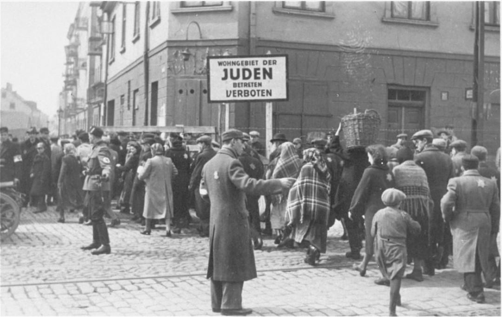

Les ghettos sont des zones urbaines fermées où les nazis ont forcé les Juifs à vivre entre 1939 et 1945. Ils constituent l’une des premières étapes du processus d’extermination : isolement, famine, travail forcé, puis déportation vers les centres de mise à mort.
Plus de mille ghettos ont été créés en Europe de l’Est, principalement en Pologne, en Lituanie, en Lettonie et en Biélorussie.
Après l’invasion de la Pologne en 1939, les nazis mettent en place une politique de ségrégation stricte. Les Juifs sont progressivement isolés, puis regroupés dans des quartiers fermés entourés de murs, barbelés et postes de garde.
Les ghettos sont totalement coupés du reste de la ville : les portes sont surveillées, les passages interdits, et toute tentative de sortie est punie de mort.
Les conditions dans les ghettos sont inhumaines. La population est entassée dans des logements insalubres, souvent sans chauffage ni eau potable. La ration alimentaire officielle est si faible qu’elle ne permet pas de survivre.
Les maladies se propagent rapidement : typhus, dysenterie, infections respiratoires. Les enfants sont les premières victimes de la famine.
Malgré les conditions extrêmes, les habitants des ghettos tentent de maintenir une vie sociale : écoles clandestines, hôpitaux improvisés, réseaux de solidarité, orphelinats, ateliers de travail.
Des archives clandestines, comme celles du groupe Oyneg Shabbos dans le ghetto de Varsovie, documentent la vie quotidienne et les crimes nazis pour les générations futures.
Parmi les ghettos les plus importants :
À partir de 1941, les ghettos deviennent des lieux de rassemblement avant la déportation vers les centres d’extermination. Les convois partent souvent des gares locales ou de places spécifiques, comme l’Umschlagplatz à Varsovie.
Des centaines de milliers de personnes sont envoyées à Treblinka, Sobibor, Belzec, Auschwitz-Birkenau ou Chelmno.
Malgré les conditions extrêmes, des actes de résistance apparaissent dans plusieurs ghettos : journaux clandestins, sabotage, évasion, organisation de réseaux de secours.
Le soulèvement du ghetto de Varsovie en avril 1943 est l’un des actes de résistance les plus emblématiques de la Seconde Guerre mondiale.
Après les déportations massives, les nazis détruisent les ghettos. Les bâtiments sont incendiés, dynamités ou rasés. Les quartiers disparaissent presque entièrement.
Aujourd’hui, seuls quelques fragments de murs subsistent, préservés comme lieux de mémoire.
Les ghettos sont devenus des symboles de la Shoah. Des monuments, musées et commémorations rappellent l’histoire de leurs habitants et de leur résistance.
La mémoire des ghettos est essentielle pour comprendre la mécanique du génocide et les conséquences de la haine raciale institutionnalisée.